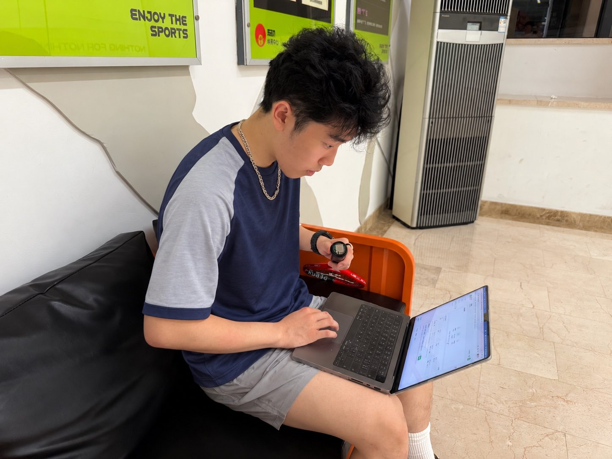

A conversation on court.
At the beginning of tenth grade, I met a specialist in AI for sports monitoring at a squash court. We both enjoyed squash and were interested in using technology to understand movement, so we quickly found plenty to talk about. Our conversations started with playing styles and training routines. Eventually, I brought up something that had bothered me for a long time: sometimes I would hit a shot I was really happy with, but when I tried to repeat it, I could not find the same feeling.
After years of playing squash, I knew this was a familiar problem. When a coach was there, I could ask for feedback. When I practiced alone, I mostly relied on how a movement felt. I wondered whether I could record what my racket and body were doing, then look back afterward to see what had changed. His work involved collecting and analyzing movement data, and the question interested him too. We hit it off and decided to try building a prototype that we could take onto the court.
That was how Racket Sensory Device (RSD), also known as SquashSense, began. I brought my squash experience and the questions I encountered in training. I took responsibility for moving the project forward, assembling the equipment, and testing it on court. He provided technical guidance and helped me work through design choices and debugging problems. It was an informal, unpaid collaboration based on a shared interest. At first, we did not know how far the project would go. We wanted to start by collecting data and see whether it could help me understand my own swing.
During tenth grade, I used time outside school to define the training problems, learn about the technology, and discuss possible approaches with him. I wanted to know when my racket began accelerating, how my body movement lined up with the racket, and what differed between swings that looked similar. A camera could show body movement, but it would struggle to capture the details of a rapidly rotating racket. A sensor on the racket could record acceleration and rotation, but it could not show how the rest of my body contributed. We decided to collect both kinds of data and try to place them on a shared timeline.
As the approach became clearer, I worked out what the prototype needed to do: record racket motion, identify body landmarks, display the data, and save training records for later review. I divided the system into three parts: a small sensor at the end of the racket grip, a camera and computer beside the court, and a web interface for viewing the results. I started with data collection and display, then gradually added swing detection and analysis.
Making room for the electronics.
During the summer after tenth grade, I had more time to focus on component selection and hardware assembly. The racket device needed to fit at the butt end of the grip, stay securely attached, and leave room for the electronics and power supply without getting in the way of my hand. With the specialist’s guidance, I compared component sizes, interfaces, sampling capabilities, and how difficult they would be to program. I selected an ESP32-S3 microcontroller and an ICM42688 six-axis inertial sensor. For the courtside computer, we chose the ROCK 5C, considering its ability to connect to a camera, receive sensor data, and run the vision software.
That summer, I also began participating in the PCB design and revisions, working on component placement and connections within the limited mounting space. The assembly required us to consider the sensor’s orientation, how the housing would attach to the racket, and how we would access the connections for debugging. Changing the sensor’s mounting direction, for example, changed what its readings meant in relation to the racket. The software had to account for that. I began to see how closely the physical design and the code depended on each other.
Getting the parts to agree.
Throughout eleventh grade, I continued refining the hardware while spending more of my time on programming and the vision system. I learned to write and debug firmware so the sensor could sample continuously and send its readings wirelessly to the courtside computer. For body tracking, I used MediaPipe’s existing pose-estimation model and built the processing around it: identifying body landmarks, calculating joint angles, and displaying movement paths. My work focused on integrating the model and handling its output. I also used open-source tools and AI coding assistance, then read, debugged, and tested the code to check whether it behaved as intended.
The vision output was not always reliable. When a player moved quickly or one part of the body blocked another, landmarks could jitter or disappear, causing the calculated angles to change abruptly. I added confidence checks, smoothing, and status indicators so the interface could show when the tracking was uncertain. I also checked performance on the ROCK 5C and worked through the trade-off between processing speed and tracking quality. These changes did not remove the camera’s limitations, but they helped keep unreliable observations from being presented as dependable measurements.
Time synchronization became another major challenge during eleventh grade. The sensor, courtside computer, and browser each kept their own clock. Wireless transmission also meant that a reading did not appear on screen at the moment it was sampled. If I simply plotted data as it arrived, the racket’s motion peak could be shifted away from the corresponding body movement. Both streams might look fine individually while giving a misleading picture of their timing. With the specialist’s guidance, I traced the data from sampling to display, retained the original timestamps, mapped the devices onto a shared timeline, and introduced gradual corrections for clock offsets. Even after implementing this, the actual synchronization error still needed further measurement.
Swing detection also required revision. The early rules relied mainly on whether the racket’s rotational speed crossed a fixed threshold. They could detect faster, larger swings but sometimes missed slower, more compact ones. That did not match what I knew from playing: a smaller movement could still be a valid swing. I adjusted the logic to consider sustained angular acceleration as well as speed, and used changes in rotation direction to refine the swing phases. After that, I paid more attention to the movements a rule failed to detect, rather than only checking whether it recognized a full, fast swing.
Back to the place it started.
During the summer after eleventh grade, I concentrated on getting the entire setup working together and testing it on court. The sensor, camera, and interface had to operate together during real training. I checked whether data continued to arrive, whether movements were detected, and whether the saved records could be reviewed afterward. When something went wrong, I worked through the possible causes: the physical connection, data transmission, detection logic, or display. Much of that summer involved going back and forth between the court and my computer—finding a problem during testing, changing the code, and returning to the court to check it again.

By the end of that summer, I had completed this stage of the prototype’s development. SquashSense could collect racket-motion data and body landmarks and display live graphs, movement information, and training records through a web interface. I also put together demonstration videos and a project website to show the equipment, explain the development process, and present the test results. It remains a prototype that needs further validation. Its movement scores, shot classifications, and usefulness for improving training still require more data and controlled comparisons.
When I started in tenth grade, there were technical problems I did not even know how to ask about. By the end of the summer after eleventh grade, I could bring specific data and my own hypotheses to discussions with the specialist about what to change next. My original question was how to repeat a good shot. Working on SquashSense gave me more questions to ask: how a measurement was produced, where it might be wrong, and what I would need to test before trusting it.